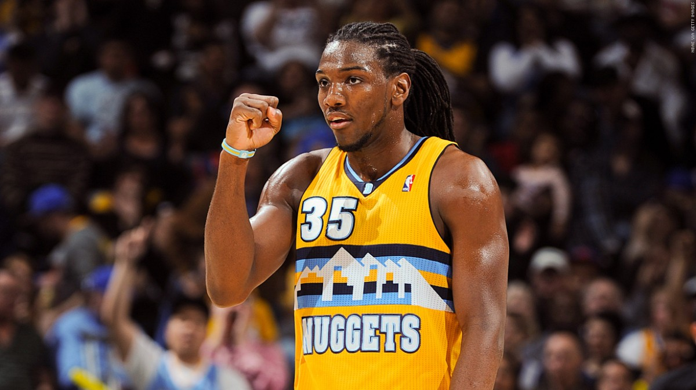
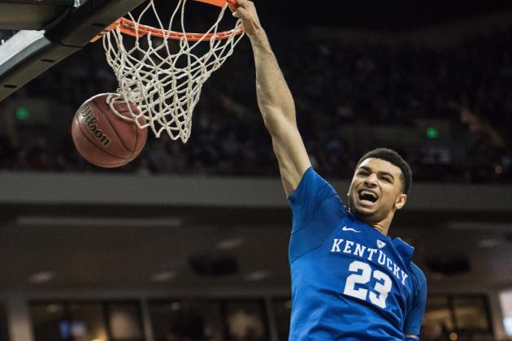
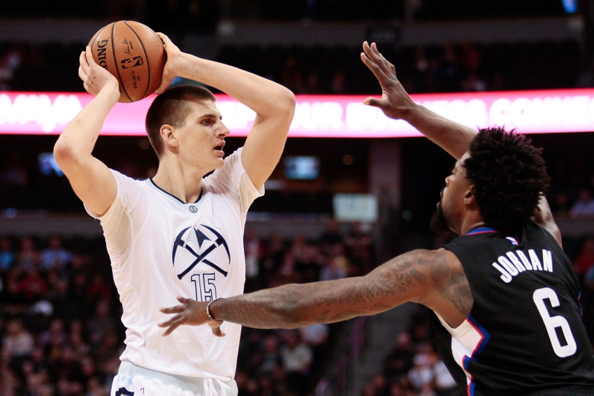
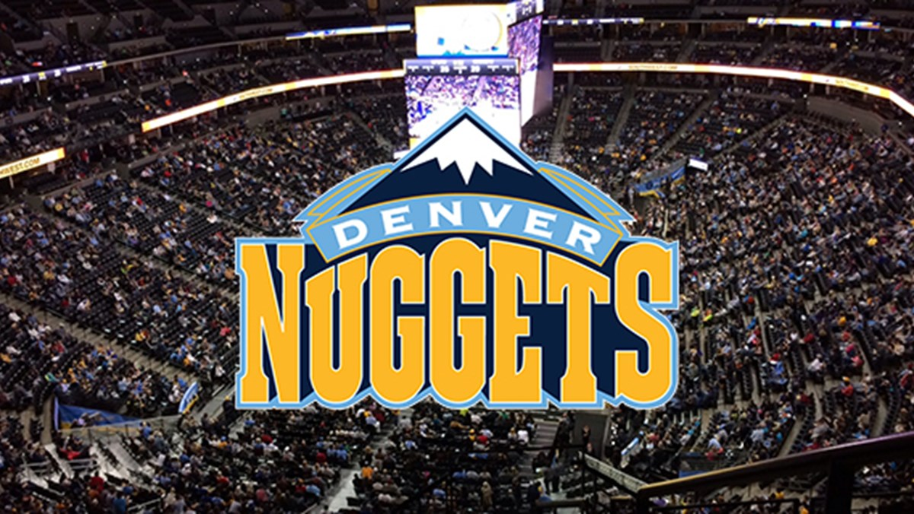
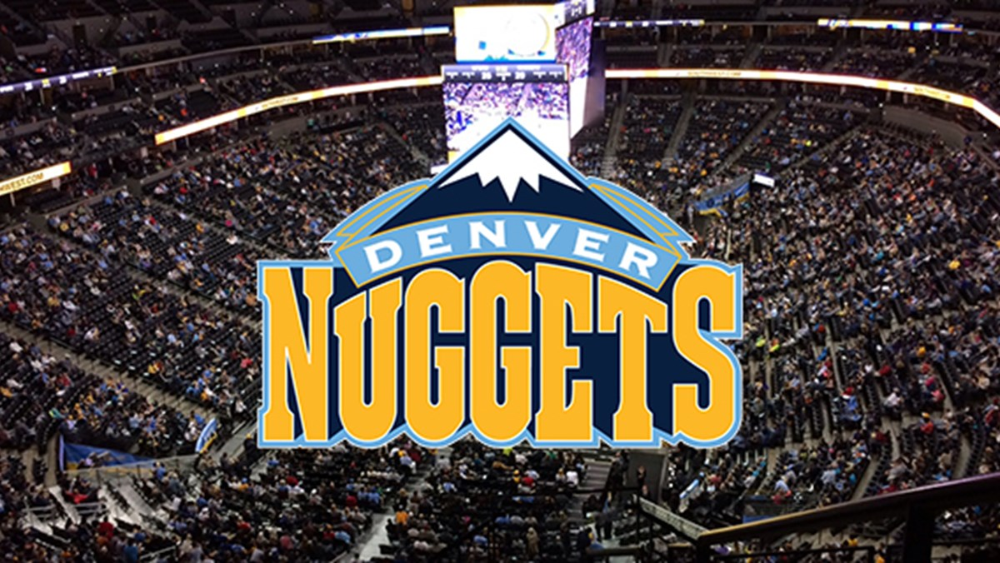

Faried here next year?
 Change is on it's way in the form of the youth movement in Denver. A 26 year-old Kenneth Faried is considered possibly too old for this core's competitive window. His stellar play in team USA world games
aside, Faried has been the same player since his breakout rookie year. The Manimal is likely on the block to free up minutes to the Baltic Block party, Jokic and Nurkic.
read more...
M-n-M Mudiay and Murray
 Back-to-back top 10 picks by the Nuggets are primary ball handling guards. Mudiay’s a tall PG at 6’5 with the ability to see the entire court and top-shelf athleticism for
his position. Elite potential on defense, but it’s all ’want to’ on that end of the floor, many players with the tools never develop on D. Murray is a shooting guard in a combo guards body. He can stroke the ball
or dunk on your big man. Murray continues the international melting pot as our own Maple Jordan.
read more..
Jokic v Nurkic
Too much talent and too few minutes for the nuggets’ european frontcourt. Jokic projects off the charts in any 36 minute projection, he can spread the floor and protect the
rim a rare hybrid of skills in the nba, add in that he has special vision at the position and he could become a star, the all-star game nods may start this year. Nurkic is an old-school post up big, who could eventually share minutes
if Jokic proves to be a capable stretch 4.
read more..
 
